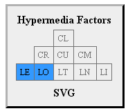
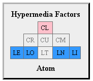
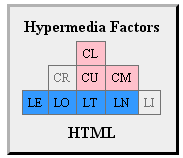

measuring up hypermedia types
 in a
recent thread on the API-Craft
news group a question came up about how one could go about selecting one of the
more
than
one-half
dozen
new
hypermedia types when it came time to implement your
Hypermedia API.
it's a pretty good thread since many of the designers of these new media types
were in on the conversation.
in a
recent thread on the API-Craft
news group a question came up about how one could go about selecting one of the
more
than
one-half
dozen
new
hypermedia types when it came time to implement your
Hypermedia API.
it's a pretty good thread since many of the designers of these new media types
were in on the conversation.
i posted a couple ways to think about assessment of a media type's applicability to the target API and thought i'd elaborate on that a bit here. the first method i recommend is to inspect the hypermedia features of the media type itself. the second measure i recommend is to try to get some information about how the media type is used in the wild.
H-Factors
one way to inspect a media type design and see if it will work for your use case is to use the H-Factor list. this is a list nine properties of hypermedia that may (or may not) be supported in the media type design. i won't go into the details of H-Factors here (you can follow the link above for details). However, the list of factors offers a way to see which hypermedia actions such as navigation links, embedding links, query forms, write bodies, the ability to select post formats, etc. (all things that Web APIs - at the network level must deal with) are described and supported within the media type in question.
  
for example
HTML
doesn't support idempotent updates (PUT and DELETE) but
Atom does. And while Atom
doesn't support describing adhoc queries (ala HTML.FORM@method="get"),
Collection+JSON does.
And while Collection+JSON doesn't support describing adhoc network methods
(e.g. specifying POST, PUT, PATCH, etc.),
Siren
does. And so forth.
so one way you can decide which media types you want to support is to figure out which hypermedia features you need to support in your API and select from the list of media type designs that match those needs.
Implementations
another way to think about selecting a media type design is to focus on the existing implementations "in the wild." this can give you a sense of the stability, usability, and flexibility of the design. here are three things to consider when assessing implementations:
- independent implementations
-
a design that has a high number of independent implementations can be a sign
that the design is easy to work with and that it has a broad reach/appeal.
it may also be a sign that the design itself is well understood and stable.
this measure is based on
David Clark's notion of "rough concensus and
running code" as a guide for standards review.
We reject: kings, presidents and voting.
We believe in: rough consensus and running code. - inter-operable implementations
-
the number of inter-operable implementations is a worthwhile measure, too.
IOW, can two people who never met before each implement the same design and
have their applications work together? This can be an indication of what
Stu Charlton calls
"serendipitous reuse."
some designs don't have this as a goal; instead they are aiming for optimizing
a custom interface between two "well-known" parties. one example of a design
that has "serendipitous reuse" as a goal is the
Maze+XML media type. there are
quite a number of successful implementations that all work together nicely.
The Web architecture is all about serendipity, and letting a thousand information flowers bloom, regardless of whether it serves some greater, over arching, aligned need.
- unexpected implementations
-
it's also good to consider whether the design results in any "unexpected uses"
- something that was not part of the original designers' goals. you'e probably
experienced something like this yourself. you're working with an app, a
coding framework, programming language, etc. and suddenly you notice something
totally novel and say "Wow! I didn't think was even possible with this!"
Donald Norman,
one of the early advocates for studying
HCI,
refers to this feaure in the last line of his excellent 2min video on
"Affordances."
The value of a well-designed object is when it has such a rich set of affordances that the people who use it can do things with it that the designer never imagined.
Other Considerations
there are other ways to make judgments about the applicability of a media-type design for your use case. here are some that come to mind:
- user activity
- this was mentioned in the thread that sparked this blog post. it is a good idea to check out how much online activity there is regarding the media type. for example, the "Issues" list in github, any associated news groups or help forums, and - in the case of established open standards groups - lists hosted by the governing standards body (W3C, IETF, OASIS, etc.). a healthy online community is can be a sign of a robust design.
- influential authors
- sometimes the authors of a media type hold an important position in the online community. this alone can give the design an 'instant' broad reach that some other designs won't match. for example, the primary authors of the JSON API (Steve Klabnik and Yehuda Katz) are also the key contributors to a couple very popular programming tools (Ruby on Rails and Ember.js respectively). when they get invovled in a design, it is likely that many will see it and get a chance to work with it.
- influential users
- in some cases, a design will be picked up by big names in the industry and this can increase the reach of a design. for example the HAL media type was recently chosen by Amazon.com for their appStream API. Microsoft's OData specification is another example of a media type design that has the opportunity to touch quite a number of developers and projects. finally, adoption by "heavy hitters" in the industry may help in cases where you need to convince your team or management to adopt the design for your own use.
the choice is yours
there you have it: H-Factors, implementation in the wild, and community standing are just some of the ways in which you can begin to critically assess whether a particular media type design is right for your API implementation. the most important thing to keep in mind in all this is not which methods you use to decide on your media type choices. the most important thing to remember is that you actively assess and make a choice.
to that end, i'll add one more quote (from Roy Fielding) to close out this post:
[C]onsider how often we see software projects begin with adoption of the latest fad in architectural design, and only later discover whether or not the system requirements call for such an architecture. Design-by-buzzword is a common occurrence.